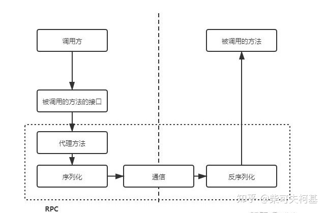
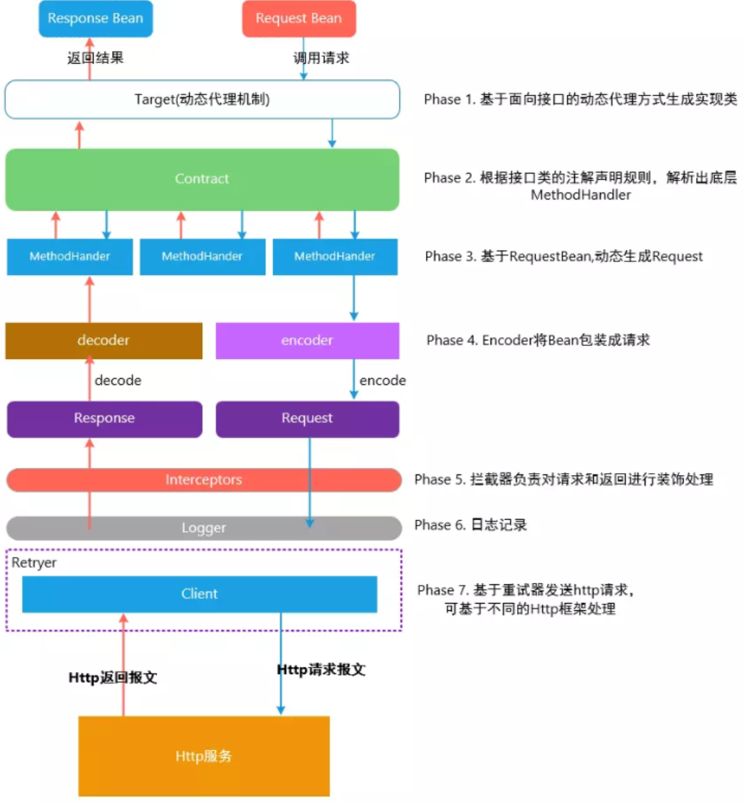

# Feign
Feign是Netflix开发的声明式、模板化的HTTP客户端。Spring Cloud openfeign对Feign进行了增强，使其支持Spring MVC注解，另外还整合了Ribbon和Eureka。
feign的作用：替代原有的http方式，用本地接口调用的方式完成http请求。虽然性能较低，但是增加了可读性。
feign之前JAVA 项目中如何实现接口http调用？
Httpclient
是 Apache Jakarta Common 下的子项目，用来提供高效的、最新的、功能丰富的支持 Http 协议的客户端编程工具包，并且它支持 HTTP 协议最新版本和建议 相比传统 JDK 自带的URLConnection，提升了易用性和灵活性，使客户端发送 HTTP 请求变得容易，提高了开发的效率。
HttpURLConnection
是 Java 的 标准类，它继承自 URLConnection，可用于向指定网站发送 GET 、POST 请求。HttpURLConnection 使用比较复杂，不像 HttpClient 那样容易使用。
Okhttp
一个处理网络请求的开源项目，是安卓端最火的轻量级框架，由 Square 公司贡献，用于替代 HttpUrlConnection 和 HttpClient。OkHttp 拥有简洁的 API、高效的性能，并支持多种协议（HTTP/2 和 SPDY）。
RestTemplate
是 Spring 提供的用于访问 Rest 服务的客户端，RestTemplate 提供了多种便捷访问远程HTTP 服务的方法，能够大大提高客户端的编写效率。
# Q：为什么feign第一次调用耗时较长？
内置ribbon，是懒加载
# 设计架构

Feign 中默认使用 JDK 原生的 URLConnection 发送 HTTP 请求。可以集成别的组件替换URLConnection，比如 Apache HttpClient、OkHttp。 Feign发起调用真正执行逻辑：feign.Client#execute
例：配置 OkHttp 依赖：
<dependency>
<groupId>io.github.openfeign</groupId>
<artifactId>feign‐okhttp</artifactId>
</dependency>
2
3
4
yml：
feign:
#feign 使用 okhttp
httpclient:
enabled: false
okhttp:
enabled: true
2
3
4
5
6